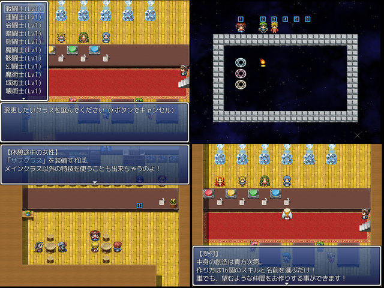

| No.20 | 『カイ』へ向かう回廊物語 | 容量：32.0MB | |
|
 | ||||
| 作者：快速くろねこ | ジャンル：VXAce型RPG 使用ツール：VXAce | 配信：可 動画：可 | 感想掲示板 | |
| コメント： その者は何故に現れ、何処へ向かい、何事を成し、何を見るのだろうか その問いの答えは、きっと、この迷宮の先にあるという『カイ』にあるのだろう (VXAceは) 初挑戦です。 間に合うように今から星に願っておきます。 | ||||
|
管理者からのコメント： VXAceか、転職システムといいこれは期待 | ||||
|
最近の更新： 8/28：パッチ更新。 8/23：パッチ更新。 8/15：提出。 7/4：公開。 | ||||